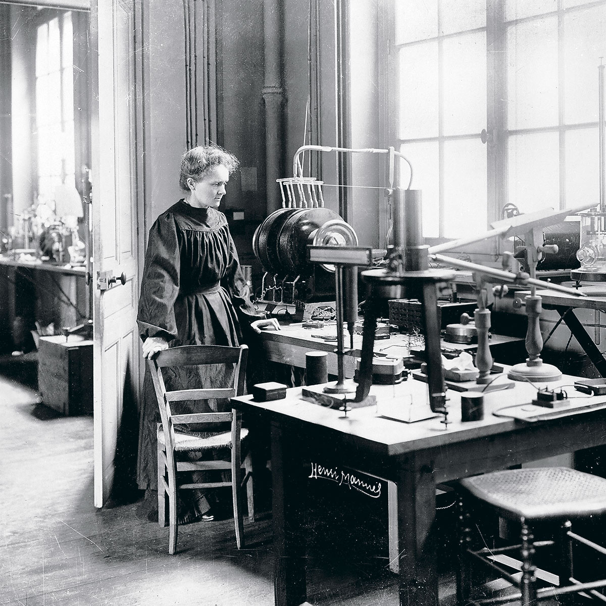

 Marie Curie tuvo una relación de colaboración estrecha con Pierre Curie, su esposo, con quien compartió el Premio Nobel de Física en 1903 por sus trabajos sobre la radiactividad. También interactuó con otros científicos como Henri Becquerel, quien descubrió la radiactividad, y Albert Einstein, quien admiraba profundamente su trabajo. Durante su carrera, a menudo trabajó en aislamiento debido a los prejuicios de género, pero su impacto científico conectó generaciones de investigadores.
Marie Curie dejó frases inspiradoras que reflejan su dedicación a la ciencia y la humanidad:
◉ "Nada en la vida es de temer, solo es de comprender. Ahora es el momento de comprender más, para temer menos."
◉ "Uno nunca se da cuenta de lo que se ha hecho; solo puede ver lo que queda por hacer."
◉ "Soy de los que piensan que la ciencia tiene una gran belleza."